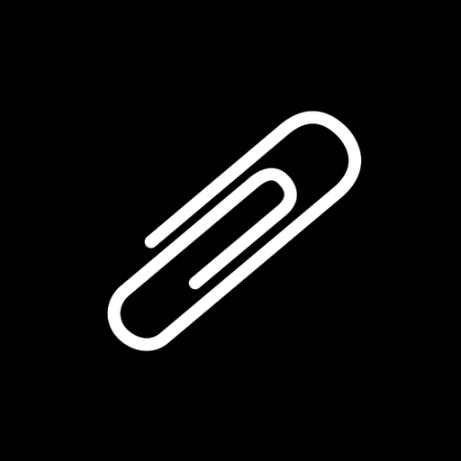

Redact sensitive content from screenshots before you share them. Drop an image, review what was detected, save the result. Everything runs on your Mac or iPhone — nothing is uploaded.
You bring ShadowClip an image — by dropping it into the app, sharing it from Finder or Photos, or using the Finder Quick Action on macOS. ShadowClip runs detection and shows you a review screen: a list of everything it found, overlaid on the image. You decide what gets redacted. When you save, a new image is written with opaque black fills over the regions you approved. The original is never touched.
Detection runs entirely on-device using Apple Vision for OCR, face detection, and barcode detection; the Natural Language framework for named entities; and hand-authored pattern matchers for credentials and structured data. The app has no network entitlement and cannot make outbound connections.
Your screenshots never leave your device. This is enforced at the architecture level: the app has no network entitlement in its sandbox, so the operating system will reject any outbound connection attempt regardless of what the code tries to do.
No account is required. No telemetry is collected. No crash reports are sent automatically — if you want to report a bug, you do it by email.
The input image is processed in memory and never written to disk. The only files written are the redacted output you choose to save, and the optional audit sidecar alongside it.
Does ShadowClip send my screenshots anywhere?
No. The app has no network entitlement and cannot make outbound connections. All processing happens locally.
Do I need an account or subscription?
No account. No subscription. One-time purchase on the App Store, covering both macOS and iOS.
What languages does text detection support?
The OCR and entity detection use Apple's Vision and Natural Language frameworks. Coverage is best for Latin-script languages. Credential pattern matching is language-agnostic — an AWS key looks the same in any screenshot.
Can I undo a redaction?
Yes, until you save or copy. The review screen has full undo. The original image is never modified; the redacted version is always a new file.
Does automatic detection catch everything?
No. The review step exists because no pattern matcher has perfect recall. Named entities in particular have meaningful false-negative rates on unusual names or non-Latin text. Always review the output before sharing.
Is Family Sharing supported?
Yes — one purchase covers all members of your Family Sharing group on both macOS and iOS.
ShadowClip is built and maintained by Quiet Signals Lab. For bug reports, feature requests, or anything else, reach out directly.
Include your macOS or iOS version and a description of what happened. Screenshots are welcome — run them through ShadowClip first.
hello@quietsignalslab.com →